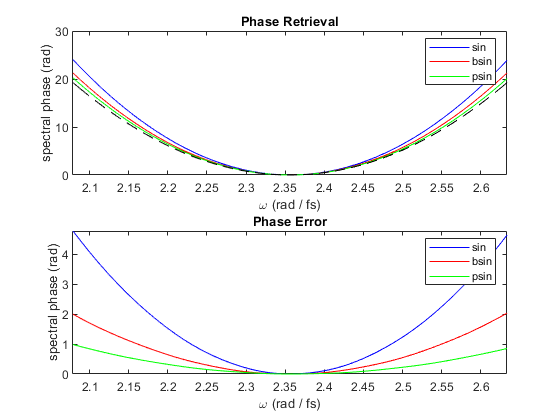

Comparison of different modulation functions
This example demonstrates the advantage of using a cubic pseudo-sinusoid as modulation function for MIIPS. The accuracy of the phase retrieval is improved because, with respect to the sin function, the pseudo-sinusoid does not contain orders higher than the third in its Taylor expansion (see A.Comin, sumbitted paper).
Contents
Set up chirped Gaussian pulse
p = gaussianPulse('f0',300/800, 'fwhm', 10, 'units', 'fs', 'dt', 0.5); GDD = 500; % fs^2 TOD = 0e4; % fs^3 FOD = 0e5; % fs^4 FTOD = 0000; % fs^5 p.polynomialPhase([ FTOD FOD TOD GDD 0 0])
Simulate Gmiips
maxGDD = 2000; % fs^2 tau = 10; amp = maxGDD/tau^2; phasesteps = linspace(-2*pi, 2*pi, 500); % using normal sin function m1 = Gmiips(p, amp, tau, phasesteps, 'gateWidth', [], ... 'modulationFunction', 'sin'); m1.notes = 'sin'; % using a pseudo-sinusoid m2 = Gmiips(p, amp*1.15, tau, phasesteps, 'gateWidth', [], ... 'modulationFunction', 'bsin'); m2.notes = 'bsin'; % using another pseudo-sinusoid m3 = Gmiips(p, amp, tau, phasesteps, 'gateWidth', [], ... 'modulationFunction', 'psin'); m3.notes = 'psin';
Warning: Time window (1/frequencyStep == 512.00 fs) appears narrow. It might be useful to decrease the frequencyStep. Warning: Time window (1/frequencyStep == 512.00 fs) appears narrow. It might be useful to decrease the frequencyStep. Warning: Time window (1/frequencyStep == 512.00 fs) appears narrow. It might be useful to decrease the frequencyStep.
Plot results
figure(1) subplot(2,1,1) plot(2*pi*p.frequencyArray, m1.retrievedPhase, 'b', ... 2*pi*p.frequencyArray, m2.retrievedPhase, 'r', ... 2*pi*p.frequencyArray, m3.retrievedPhase, 'g', ... 2*pi*p.frequencyArray, p.spectralPhase, 'k--'); legend(m1.notes, m2.notes, m3.notes) xlim([-1,1]*2*pi*p.bandwidth+2*pi*p.centralFrequency) xlabel(['\omega (rad / ', p.timeUnits, ')']) ylabel('spectral phase (rad)') title('Phase Retrieval') subplot(2,1,2) plot(2*pi*p.frequencyArray, m1.retrievedPhase-p.spectralPhase, 'b', ... 2*pi*p.frequencyArray, m2.retrievedPhase-p.spectralPhase, 'r',... 2*pi*p.frequencyArray, m3.retrievedPhase-p.spectralPhase, 'g'); legend(m1.notes, m2.notes, m3.notes) xlim([-1,1]*2*pi*p.bandwidth+2*pi*p.centralFrequency) xlabel(['\omega (rad / ', p.timeUnits, ')']) ylabel('spectral phase (rad)') title('Phase Error')